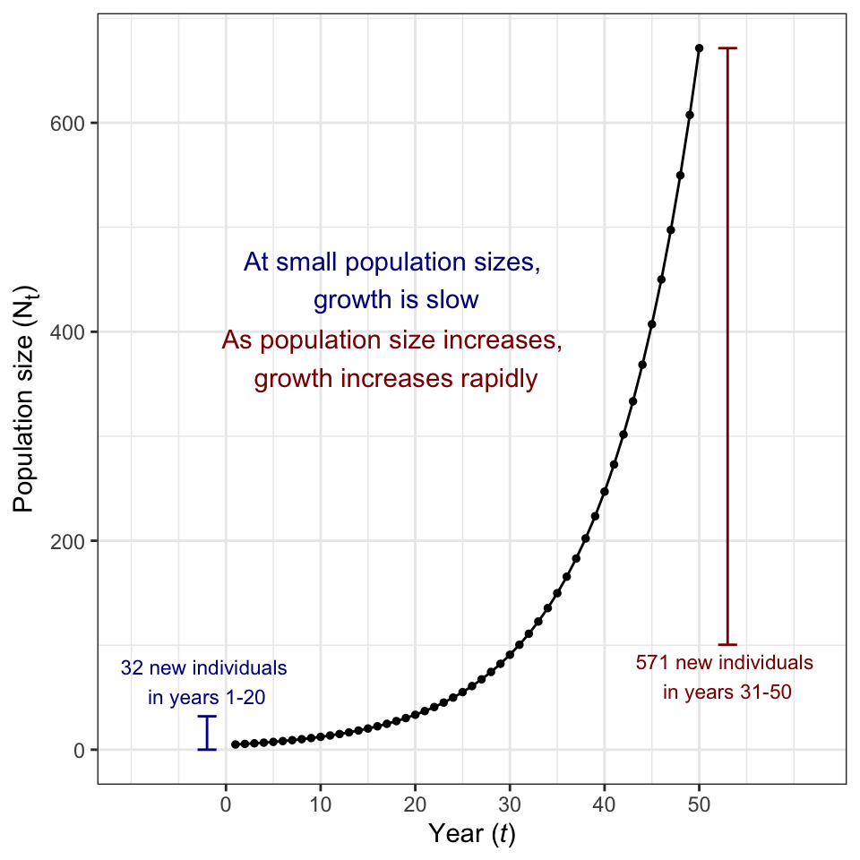

I specialize in teaching quantitative methods and statistics from an ecological perspective, including topics such as regression, mark-recapture, and population dynamics. However, some of my past teaching experiences have also included introductory biology and field-based taxonomic courses. While my approach might vary between different types of courses, the overview below is an example of how I might apply some common strategies to a scenario I’m familiar with: teaching population dynamics to undergraduates.
Instructor of Record:
Teaching Assistant:
Principles of Biology (Kansas State University)
Introductory Biology: Ecology and the Environment (Cornell University)
Field Ornithology (Cornell University)
Workshops:
Advanced programming in R (University of Maine; 3-lecture series)
Introduction to scientific data analysis (Cobscook Institute)
I’ve taught stats-based courses primarily through a lecture/lab
hybrid format, where students receive a common introduction to concepts
before breaking out into groups or working individually through a lab
assignment. While teaching lab courses, I adopt the following
strategies:
\[N_{t+1} = N_{t} e^{r}\]
Variables:
\(N_{t}\): Population size in year t
\(N_{t+1}\): Population size in the next year (\(t+1\))
\(e\): Mathematical constant referred to as Euler’s number (pronounced ‘oiler’). Approximatly equal to 2.71828.
\(r\): Instantaneous population growth rate: the rate at which new individuals enter a population. When r = 0, no population growth occurs. If r > 0, the population is growing, and if r < 0, the population is shrinking.
Definition: The exponential growth model demonstrates how population growth accelerates when the number of individuals in the population increases. The more reproductively-active individuals you have within the population, the more new offspring you’ll have each year.
\(r\) indicates how fast that population growth occurs: having lots of offspring or having a very low mortality rate could both lead to a high \(r\).
Demonstration: Let’s use a typical value of \(r\) (\(r\) = 0.1). At fairly small population sizes (\(N_{t}=5\)), the population would grow slowly.
\[N_{t}*e^{r}\] \[(5)*2.71828^{0.1} = 5.53\]
Here, the population increased by only 0.53 individuals. Let’s see what happens if we increase \(N_{t}\) to a much larger number (\(N_{t}=500\)).
\[N_{t}*e^{r}\] \[(500)*2.71828^{0.1} = 553.59\]
Here, the population increased by 53.59 individuals. Increasing our starting population size by a factor of 10x increased the number of new individuals per year by the same factor. Here’s a graphical illustration of how this accelerating growth can compound over time, and drive populations to incredible sizes.
